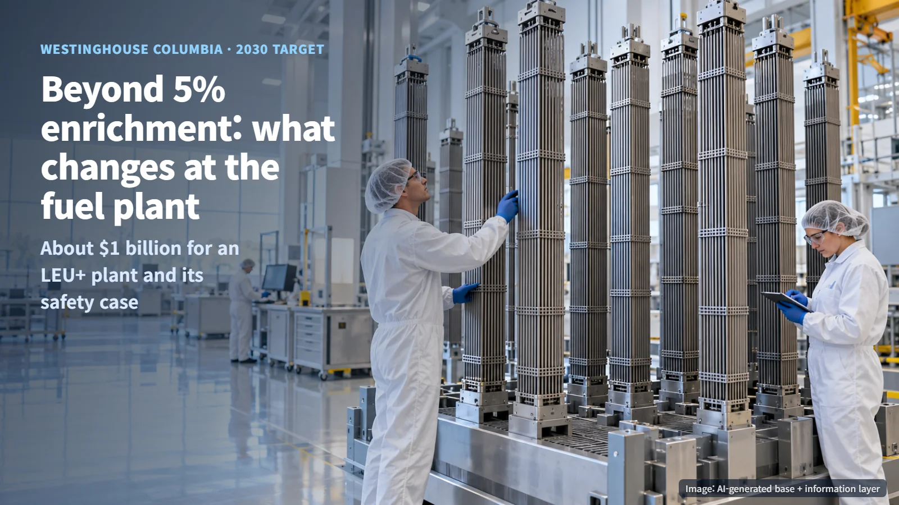
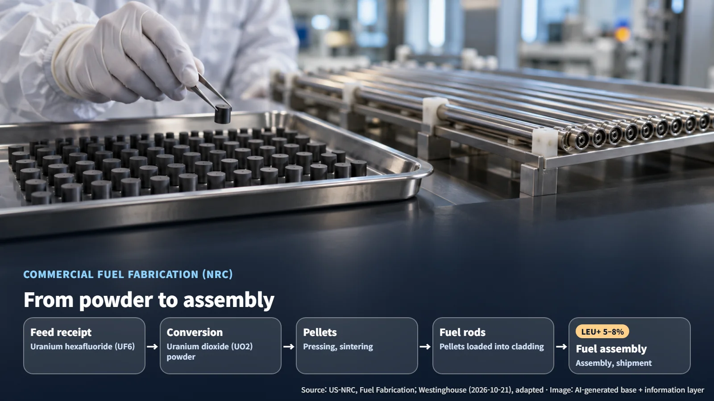
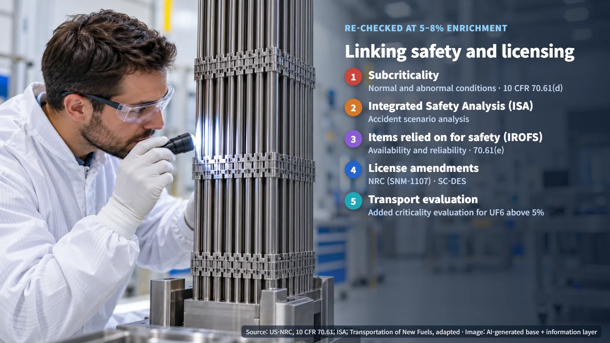

United States · LEU+ Fuel
Fuel Enriched Beyond 5%: What Changes Inside the Factory at Westinghouse's New LEU+ Plant
Raising fuel enrichment to 5–8% sets off a chain of changes in a fuel plant, from criticality safety analysis to license amendments and transport conditions.
When you hear that nuclear fuel enrichment is going up by a few percentage points, it can sound like a matter of changing a few numbers on a specification sheet. Yet this small shift comes with a new plant worth about $1 billion and changes to the facility's licenses. The clearest way to see why is to follow the fuel through the factory, step by step.

About $1 Billion and a 2030 Target for an LEU+ Plant
On October 21, 2026, Westinghouse announced that it will invest about $1 billion to build a new LEU+ plant at its Columbia Fuel Fabrication Facility in Hopkins, South Carolina. The company said construction of the new plant is under way, with operations targeted to begin in 2030. The plan is to secure commercial-scale fuel manufacturing capacity to support the long-term operation of existing reactors and the expanding supply of AP1000 units.
LEU+ is fuel in which the share of U-235 in the uranium, known as the enrichment level, is raised to 5–8%. According to the announcement, LEU+ gives reactors options for power uprates and longer operating cycles, and the actual benefit at each plant is confirmed through that plant's design, safety evaluation and license conditions. The company points to its first use of LEU+ in the United States in 2025 as the foundation for the new plant.
Built in 1968, the Columbia facility produces fuel pellets, rods, assemblies and components, and employs more than 1,200 people. Uranium enrichment takes place at separate enrichment facilities; Columbia receives the enriched material and turns it into fuel products ready to go into a reactor.
What a Fuel Plant Does: From Powder to Assembly
The US Nuclear Regulatory Commission (NRC) describes commercial fuel fabrication as a sequence. Uranium hexafluoride (UF6) received from an enrichment facility is converted into uranium dioxide (UO2) powder. That powder is pressed and sintered (baked at high temperature until it hardens) into small cylindrical pellets. The pellets are loaded into cladding tubes, which are then assembled into fuel assemblies.
Powder becomes pellets, and pellets are sealed in cladding and bundled into assemblies: that flow is the work of a fuel plant. So when the enrichment level changes, the handling conditions are re-examined continuously from the incoming feed material all the way to the finished fuel.

The NRC explains that for fuel with 5–10% U-235, manufacturing operations such as chemical processing can change, and that criticality safety analyses, the integrated safety analysis and controls may need revision, along with physical modifications to equipment. The specific equipment configurations and limits for Columbia will be set out in the design and analysis documents the licensee submits.
What Must Be Demonstrated Again as Enrichment Rises: Subcriticality and Integrated Safety Analysis
Criticality control sits at the heart of fuel plant safety. Criticality is the state in which a fission chain reaction sustains itself; subcriticality is the condition managed so that this state is never reached. As the proportion of U-235 rises, more atoms are available to contribute to a chain reaction, so the safety calculations are redone on the basis of the new enrichment level.
The US regulation 10 CFR 70.61(d) requires every nuclear process to remain subcritical with an approved margin under normal and credible abnormal conditions, and it gives priority to preventing criticality accidents.
The framework that demonstrates this is the Integrated Safety Analysis (ISA). The ISA analyzes the facility's accident scenarios and designates items relied on for safety (IROFS) that prevent those accidents or mitigate their consequences. IROFS can include administrative controls (operating rules and procedures) as well as equipment and devices, and 70.61(e) requires the availability and reliability of the needed functions to be assured.
Section 70.61 sets stricter goals for accidents with larger consequences. High-consequence events must be highly unlikely or have their consequences mitigated, while intermediate-consequence events must be unlikely. A review of an enrichment change ties the calculated results and the safety functions maintained during actual operation together into a single picture.

License Amendments, Transport and 2030
The existing Columbia facility is regulated by the NRC as a fuel fabrication facility under operating license SNM-1107. The NRC requires a license amendment application when existing possession and use limits do not allow the target enrichment. Westinghouse states that LEU+ manufacturing requires an NRC license and an amendment to its permit from the South Carolina Department of Environmental Services (SC-DES), and it has disclosed that it discussed the license amendment application and the ISA with the NRC at a pre-application meeting on September 8, 2025. The next documents to watch for are the application, the review results and the amended license conditions.
Transport is another area to prepare. The NRC explains that shipping UF6 enriched above 5% may require additional criticality evaluation or review of related exemptions. The route that brings feed material into the plant also needs packages and conditions suited to the new enrichment level.
The year 2030 is the operating target announced by the company. Between now and then, the milestones to follow are construction progress on the new plant, the amended licenses from the NRC and SC-DES, and each reactor's schedule for adopting LEU+ fuel together with its conditions for power uprates and operating cycle changes.
A difference of a few percentage points in enrichment moves plant equipment, safety analyses, license documents and transport conditions all at once. With that chain in view, each licensing update that appears from here on becomes easier to place along the path that leads to fuel supply.